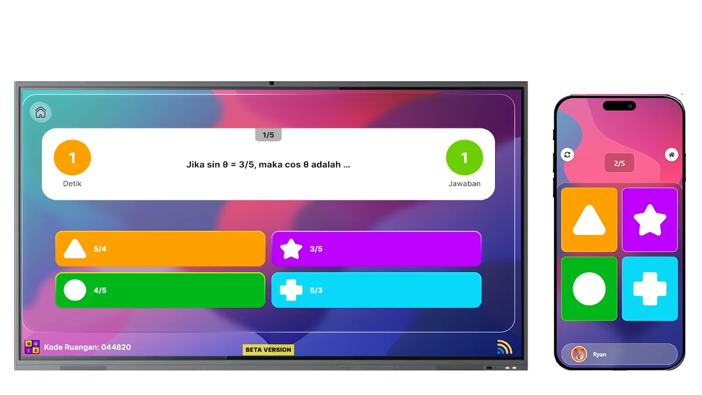
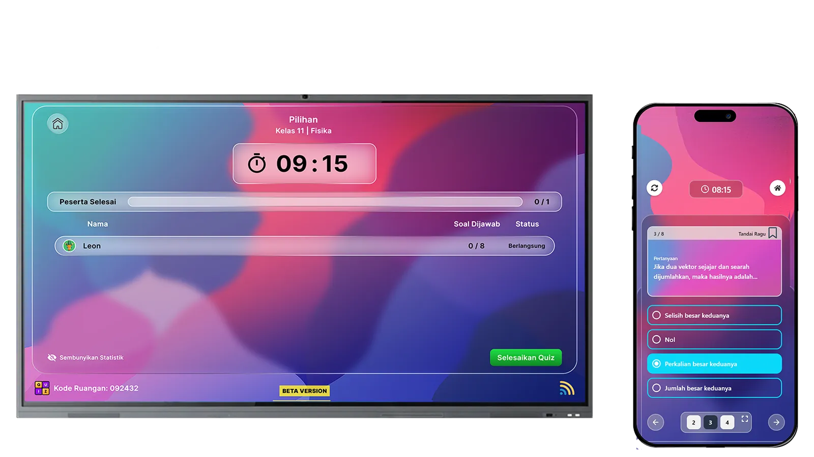
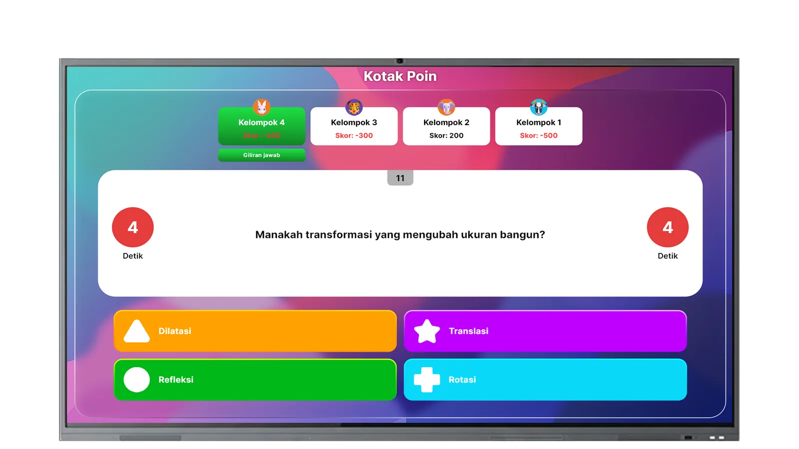

Ubah penilaian membosankan
menjadi acara kelas favorit.
Saat kuis berubah dari kertas ujian menjadi permainan langsung di papan tulis, semua siswa berebut menjawab. Antusiasme datang. Fokus kembali. Pembelajaran menempel.



Format game di papan interaktif
Leaderboard real-time, timer dramatis, pilihan jawaban warna-warni. Siswa berlomba menjawab — partisipasi seluruh kelas, bukan hanya yang berani angkat tangan.
Pembuatan soal instan dengan AI
Guru tinggal pilih topik dan tingkat kelas — AI menghasilkan soal berkualitas dari 100.000+ bank soal terkurasi. Yang biasanya butuh berjam-jam selesai dalam hitungan menit.
Penilaian otomatis & feedback langsung
Tidak ada lagi mengoreksi semalaman. Skor keluar saat itu juga, lengkap dengan analisis: soal mana yang paling sulit, siswa mana yang perlu pendampingan tambahan.
Berjalan sempurna tanpa internet
Seluruh permainan kuis terjadi di papan interaktif itu sendiri. Siswa tidak butuh smartphone atau koneksi data — inklusif untuk setiap sekolah, di mana pun lokasinya.
untuk persiapan & koreksi
siap pakai, AI-ready
vs. metode tradisional
hasil keluar instan
"Saat kuis menjadi acara yang ditunggu — bukan tes yang dihindari — itulah saat pembelajaran benar-benar terjadi."
Siap membawa kelas Anda
ke level berikutnya?
Jadwalkan demo eksekutif untuk sekolah atau yayasan Anda. Tim kami akan menyiapkan presentasi yang disesuaikan dengan konteks institusi.